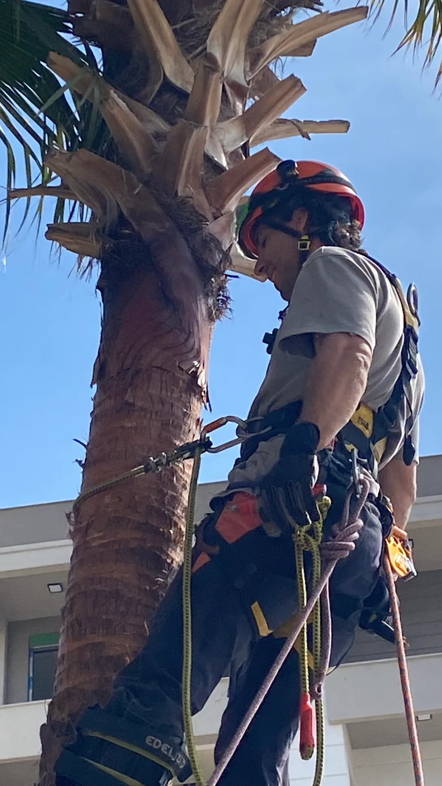
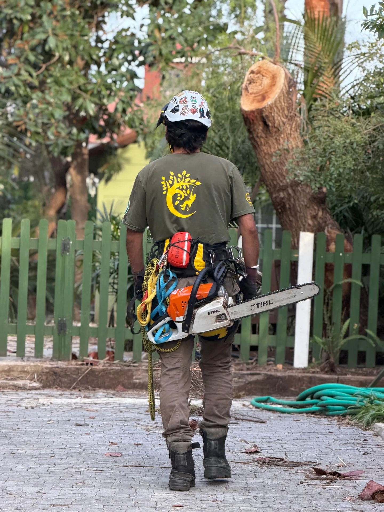

- Yıllık deneyim
- 10+
- Tamamlanan proje
- 500+
- Acil müdahale
- 7/24
Uzmanlık alanlarımız.
Tüm hizmetler ↗Ağaç budama
Kuruyan ve birbirine sürten dalları ayırarak ağacın doğal formunu koruyor, sağlıklı dallara gelişecek alan açıyoruz.
Budama ve bakım ↗Palmiye bakımı

Palmiyenin büyüme noktasını koruyarak kurumuş yaprakları ve meyve salkımlarını temizliyoruz.
Palmiye bakımı ↗Kablolama ve destek
Zayıf dal birleşimlerini inceliyor, yükü paylaşacak esnek desteklerle ağacın yerinde büyümesine yardımcı oluyoruz.
Destekleme yöntemleri ↗CrownPro ekibi
İlk adım yerde.
İpe çıkmadan önce ağacı yerden inceleriz. Gövdenin eğimi, dalların yükü ve çevredeki yapılar o gün nasıl çalışacağımızı belirler.
Ekibimizi tanıyın ↗